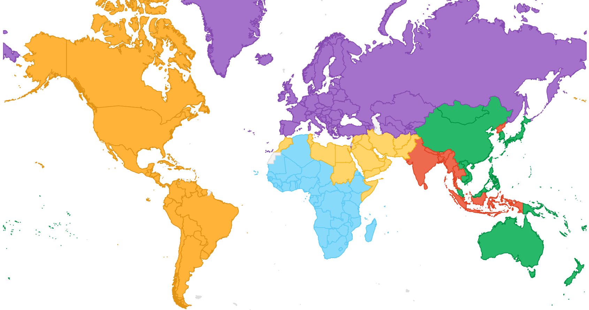
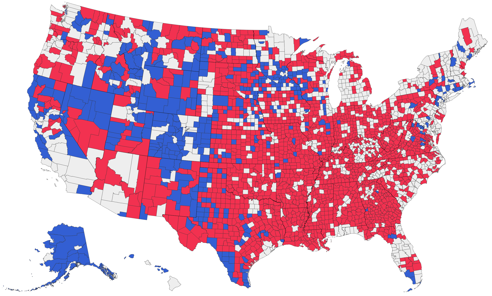
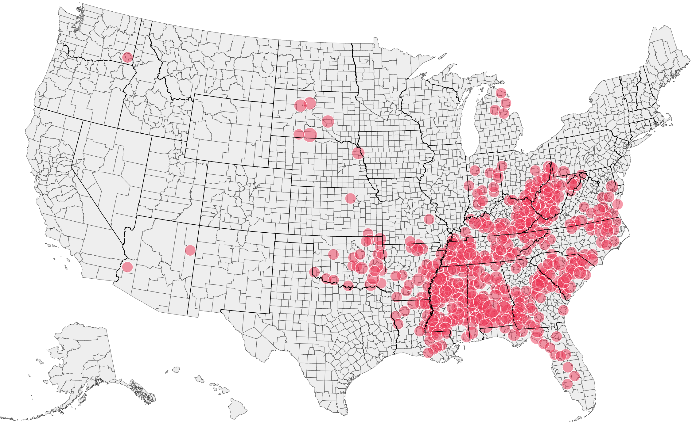
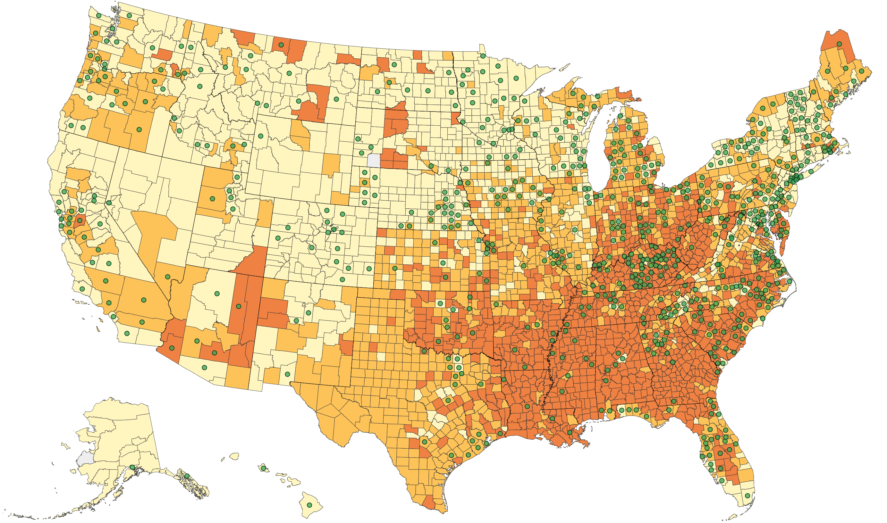
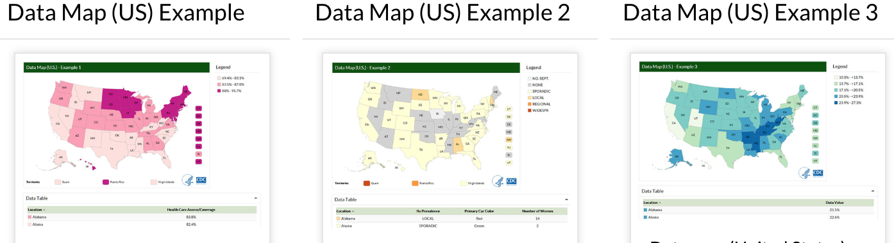
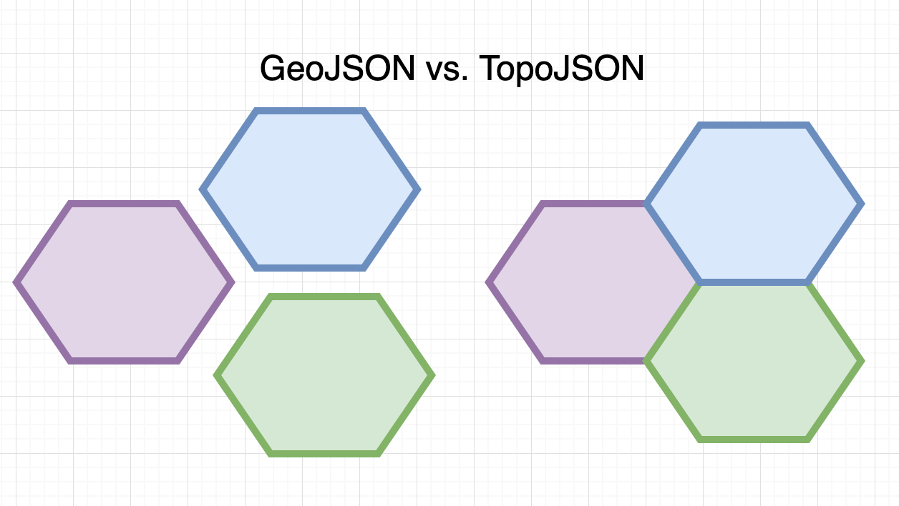
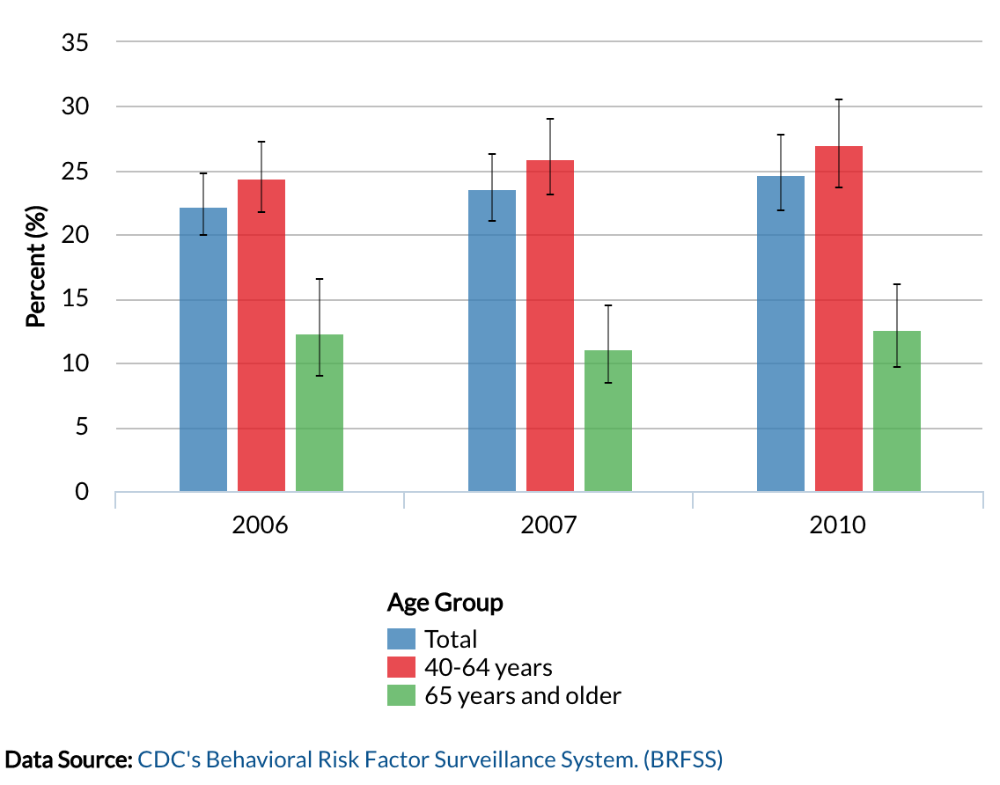
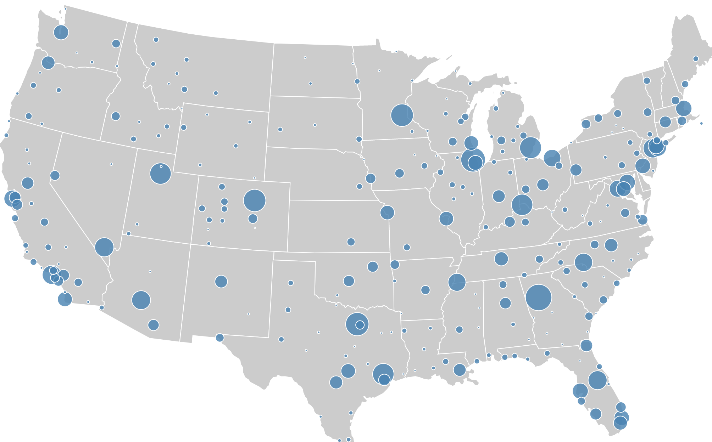
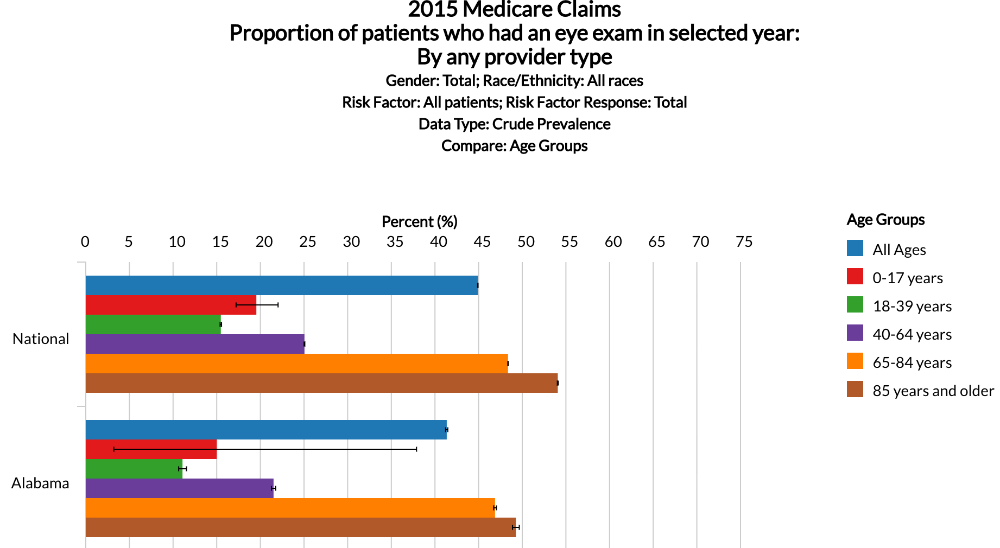
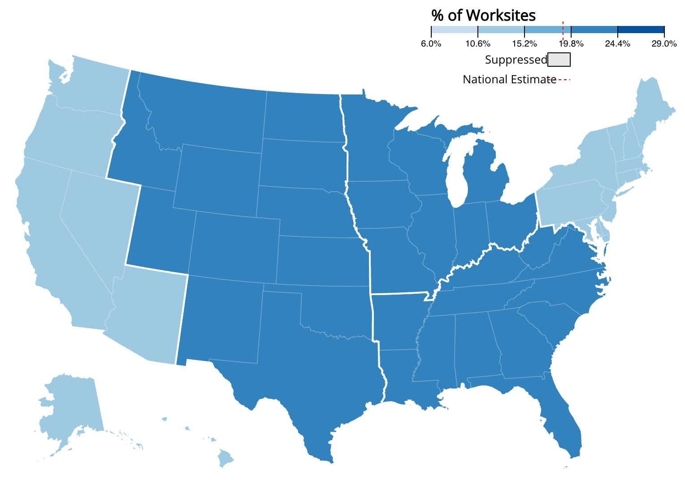

Visually Display Information on Maps
    DataVIZ SAG Day at CDC, Oct./07/2019Cosmin Potocean
- Software Dev/Engineer
- Northrop Grumman
- CDC - NCCDPHP - Chronic
What Will Cover
- Why Graphical Display
- Data Maps
- Process of a Custom Map
- Examples
- Other Visualizations
Scenario: Cholera Outbreak in London: 1854
 John Snow: A Legacy of Disease Detectives
John Snow: A Legacy of Disease Detectives
Why Graphical Display
- shows the data
- ..complex ideas communicated with clarity, precission, and efficiency
- ..viewer to think about substance rather than the methodology..
Data Maps
WCMS Data Maps
One picture can carry large volume of information
WCMS TP4 Features Gallery
(https://www.cdc.gov/wcms/4.0/cdc-wp/data-presentation/index.html)
Process of a Custom Map 1/3
- Shapefile
geospatial vector data for GIS
https://www.census.gov/programs-surveys/geography.html
https://www.naturalearthdata.com/
GDAL is a translator library https://gdal.org/ - GeoJSON
encoding geographic data
http://geojson.org/
The GeoJSON Specification (RFC 7946 ) - TopoJSON
simplified encoding geographic data
eliminates redundancy, more efficient, smaller size https://github.com/topojson/topojson

Process of a Custom Map 2/3
- HTML, CSS, JavaScript
- D3.js Data-Driven Documents
.....
g.selectAll('path')
.data(stateInView)
.enter()
.append('path')
.....
.style('fill', function (d) {
// ############## MAP COLORS ############## ADI
if (_mapType === 'mapChoice1' && d.properties._ADI && parseFloat(d.properties._ADI)) {
let adi = d.properties._ADI
const mapChoice1 = legend.mapChoice1;
if (adi < 107.1) { return mapChoice1.low.color }
if (adi >= 107.1 && adi < 111.9) { return mapChoice1.med.color }
if (adi >= 111.9) { return mapChoice1.high.color }
}
......
Process of a Custom Map 3/3
- 1 - Data is loaded on the map topojson file
- 2 - Data is loaded from a local file
- 3 - Data is loaded from an API: https://nccd.cdc.gov/nccdproxyInternet/GTSSdata/publicAPI/GetWCMSLookups
Example: National Diabetes Prevention Program
https://www.cdc.gov/tobacco/global/gtss/gtssdata/index.htmlExample: Global Tobacco Surveillance System Data
https://www.cdc.gov/tobacco/global/gtss/gtssdata/index.htmlOther Visualizations
   What Did We Cover
- Why Graphical Display ✓
- Data Maps ✓
- Process of a Custom Map ✓
- Examples ✓
- Other Visualizations ✓
Thank you
?
presentation: https://github.com/cosmycx/visually-display-info-maps presentation source code: https://github.com/cosmycx/visually-display-info-maps
presentation used: reveal.js